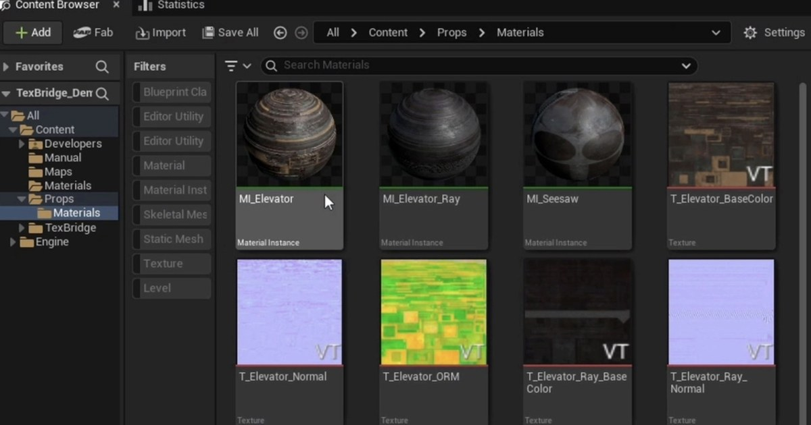

TexBridge：把 Painter 貼圖送進 UE5 並自動建立材質實例
Moss3D 的 TexBridge 可從 Substance 3D Painter 匯出貼圖並送進 Unreal Engine 5，自動設定貼圖類型、建立各貼圖組的材質實例，還能指定給選取的靜態網格。

Unreal ★★★★★
完整分析
貼圖往返與材質建立流程
兩套軟體保持開啟後，選擇匯出預設、貼圖組與 Unreal 目的資料夾，再執行 Export + Send。工具會匯出及匯入貼圖，為每組建立材質實例，並可套用到選取的靜態網格，集中處理貼圖更新步驟。
貼圖設定與團隊交接價值
法線貼圖採用對應壓縮，打包 ORM 使用 Masks 並關閉 sRGB，另可處理 OpenGL 至 DirectX 法線轉換。匯出設定與材質映射能存成共用設定檔，因此可把重複的匯入設定交接給團隊，而不必每次重新指定。
同機連線與版本相容限制
TexBridge 透過 Unreal 內建的 Python Remote Execution 連線，不需要另裝 Unreal 插件。文章列出的條件是 Windows、Painter 8.3 以上與 UE5，而且兩套程式必須在同一台電腦；不能據此視為跨主機或跨平台傳輸工具。
BRIEF｜來源已驗證；證據深度較有限，完整分析會明確區分已知資訊與待驗證事項。